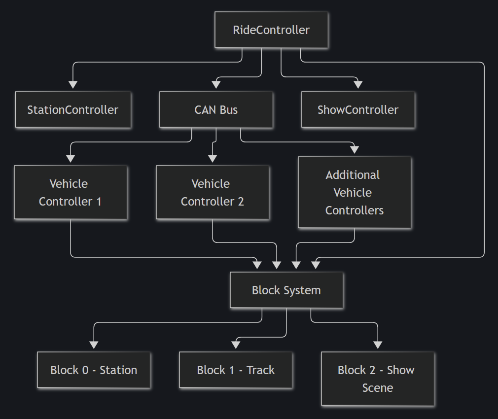
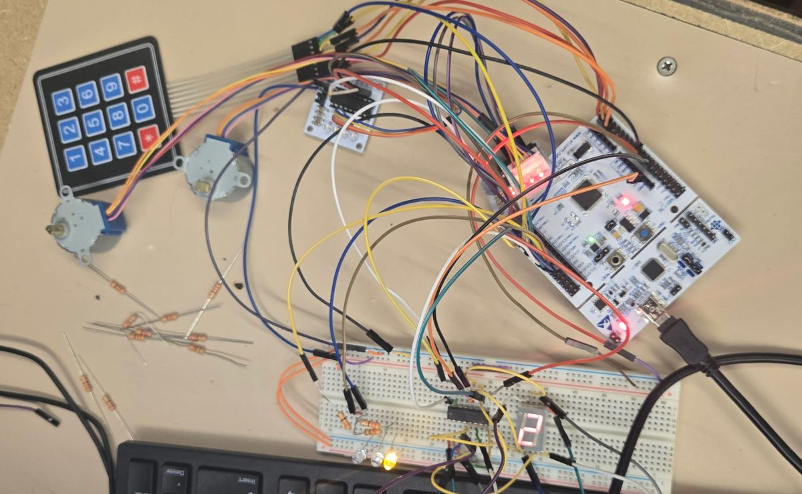

About
Hi, I'm Bennett. I study Computer Engineering at Pitt, with a concentration in Autonomous Systems and a minor in Philosophy. Right now I'm on the Disney College Program working attractions at Walt Disney World, which has made me even more interested in the engineering behind rides and shows.
My real passion is hardware. Most of what I build is embedded systems and control logic: microcontrollers, motors, sensors, and the low-level code that runs them. I'm looking for hardware and embedded internships, especially in ride and show control.
Skills:
| Hardware | STM32, FPGA, stepper motors, keypads, 7-segment displays, UART |
| Languages | C++, C, ARM assembly, VHDL, Python, Lua |
| Tools | Git, GitHub, GitHub Actions, CMake, VS Code, STM32CubeIDE, Catch2, Quartus, ModelSim |
| Libraries | Tkinter, pygame, Google Colab |
Projects
Virtual Attraction Control System (VACS)
View the VACS source code on GitHub → github.com/bennettfix/Dark-Ride-Control-System
A C++ simulator of a multi-vehicle attraction control system. VACS manages exclusive block occupancy, only permits dispatch when station safety interlocks are satisfied, and inhibits ride movement during emergency stops or communication faults. A CAN-style communication layer provides vehicle heartbeat and status messages, while a show controller triggers lighting, animatronic, and audio cues as vehicles enter the show scene. Catch2 tests and GitHub Actions verify dispatch, fault handling, block protection, and recovery behavior.

VACS system architecture.
Concept demo — not VACS
This is a simplified JavaScript model written for this webpage, with help from Claude, to show a few of the ideas behind VACS: block occupancy, dispatch permissives, E-stop, and a heartbeat watchdog. It is not the VACS code and leaves out most of the real system. The actual project is the C++ code on GitHub.
[ STATION ] ---> [ TRACK ] ---> [ SHOW ]
[4] [3] [2]
Status: loading
How to use it: press Dispatch, then Run Cycle to move vehicles forward one step. Dispatch is refused unless the station is secure and the track block is clear. Drop vehicle 2's heartbeat and run two cycles to trip the watchdog.
RC car
An RC car I'm building from the ground up around an STM32. This is the first time I got the drive motor running.
Ryan thinks he's very funny by saying the motor isn't spinning.
Elevator control system
An elevator controller written in assembly for a course project. It handles floor selection from a keypad, tracks the car's position, drives a stepper motor between floors, and shows the current floor on a 7-segment display.

The full setup: STM32 Nucleo, keypad, stepper motors and driver board, and the 7-segment display (currently on floor 2).
STM32 ASCII animation
A small gift project for my mom: an STM32 Nucleo board that plays an ASCII art animation over UART to a terminal.
Pathfinding and maze solving
An A* search pathfinder and a BFS maze solver built for my data structures course, along with my own list and queue implementations.
Teaching projects for kids
While teaching a summer STEM class, I wrote programs simple enough for 11-year-olds to read and change: a rock-paper-scissors predictor, a color classifier, a pixel shape classifier, and a few pygame games including a space shooter and a tower defense game.
Experience
Attractions Cast Member, Walt Disney World
Operate and load guests on Slinky Dog Dash at Disney's Hollywood Studios.
STEM Instructor, Lavner Education
Taught Python and basic neural network concepts to beginners. Rewrote parts of the curriculum when it proved too advanced for the group, including a scaffolded MNIST classifier notebook for class use.
Instructor, Athena Coding
Learned Lua and taught it to campers.
Education
University of Pittsburgh, Swanson School of Engineering
B.S. Computer Engineering, concentration in Autonomous Systems, minor in Philosophy.
Expected August 2028.
Relevant coursework:
| Spring 2027 (registered) | Cyber-Physical Systems, Embedded Systems Design, Computer Organization and Architecture, Applied Discrete Mathematics, Junior Design |
| Completed | Embedded Processors and Interfacing, Signals and Systems, Data Structures and Algorithms |
Other things
Selected for Disney's Tech Behind the Dreams experience, a look at the technical disciplines behind themed entertainment. Member of the Themed Entertainment Association (TEA).
Eagle Scout (Troop 127) and former Senior Patrol Leader. Outside of engineering I backpack, play piano, and read classical literature.
Prize wheel
Thanks for visiting. Spin the wheel to claim a prize. Every spin is a winner.
Contact
Email: bennettdfix@gmail.com
GitHub: github.com/bennettfix
LinkedIn: linkedin.com/in/bennettfix